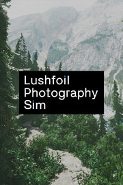

Lushfoil Photography Sim Demo
Lushfoil Photography Sim Demo
Detalles
|  | |
| Tiempo de juego | No Jugado |
| Última actividad | Nunca |
| Añadido | 20/06/2024 19:17:45 |
| Modificado | 20/06/2024 19:19:34 |
| Estado de finalización | Not Played |
| Librería | Steam |
| Fuente | Steam |
| Plataforma | PC (Windows) |
| Fecha de lanzamiento | |
| Puntuación de la Comunidad | |
| Puntuación de la Crítica | |
| Puntuación de usuario | |
| Género | |
| Desarrollador | |
| Editor | |
| Característica | |
| Enlaces | Punto de encuentro Discusiones Guías Noticias Página de la tienda PCGamingWiki |
| Tag | 3D Adventure ambient Atmospheric Casual Controller Exploration First-Person hidden-object immersive-sim nature Nonlinear realistic Relaxing Sandbox Simulation Singleplayer snow VR Walking simulator |
Descripción

Experience detailed, true-to-life recreations of beautiful and diverse locations around the world. Trek through and explore environments to capture stunning vistas and landscapes with your fully-featured in-game camera. Each environment is filled with objectives to reward players that have a good eye for angles and perspectives, and hidden secrets for those who are patient and observant.
The rich atmosphere of Lushfoil Photography Sim is enhanced by an ambient, ethereal soundtrack featuring licensed music from artists around the world.

Capture the Perfect Shot
The in-game camera includes an abundance of settings that you'd expect from a real-world professional DSLR camera. The camera simulates settings such as Auto/Manual Focus, Flash, Exposure, Contrast, White Balance, Aperture, Burst Shot and other effects for full creative control over your photography. The game further provides tools that allow for manipulation of the environmental conditions for your photos, such as manual adjustment of light angles, fog, snow, wind, and rain.

Off the Beaten Path
Dive deeper into the game’s many locations to find unlockable cameras and experience the world from unique perspectives. Find a first-person drone that allows you to soar above the landscape and capture the world from above, or find a hidden rowboat that allows you to traverse still waters in pursuit of the perfect shot.

Very Efficiently Optimised
Each environment has been created in Unreal Engine 5 and is built from the ground up to be both efficiently optimized and showcase the game’s locations in stunning visual fidelity. There are extensive custom settings that will help the game run on a wide range of PCs, while taking full advantage of high-end graphics cards.

About Me
My name is Matt, I'm from Perth in West Australia and I've been working on this project solo for about 4 years (as of April 2023). As an avid hiker and photographer I hope you're able to appreciate the atmosphere and details I have tried to encapsulate in these environments. I sincerely hope you have a great experience :')